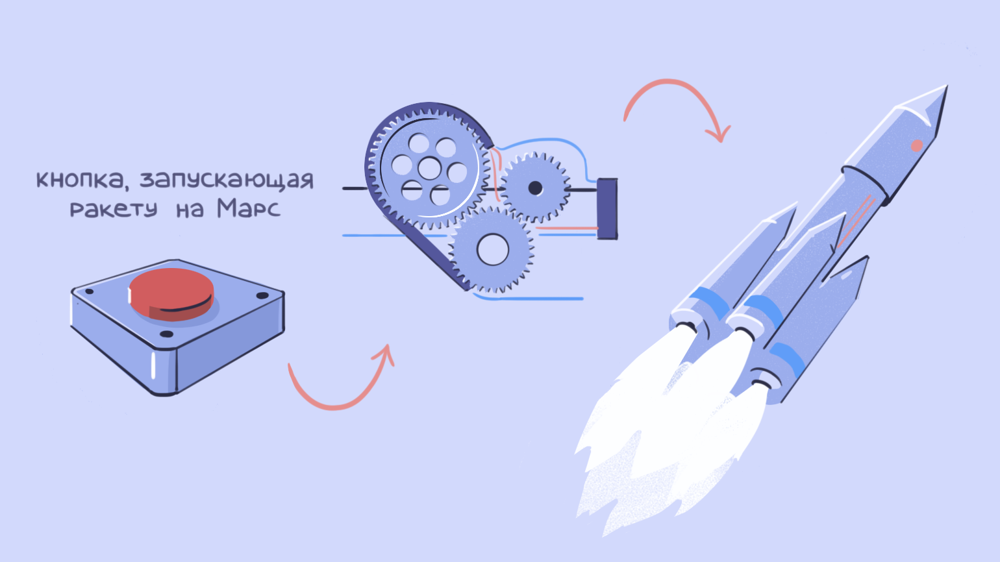

При чем тут интерфейс?
Интерфейс — это граница между двумя функциональными системами, на которой происходит их
взаимодействие и обмен информацией. При этом процессы внутри каждой из систем скрыты друг от друга.
С помощью интерфейса можно использовать возможности разных систем, не задумываясь о том, как они
обрабатывают наши запросы и что у них «под капотом». Например, чтобы позвонить, не обязательно
знать, как смартфон обрабатывает нажатия на тачскрин. Важно лишь, что в гаджете есть «кнопка»,
которая всегда возвращает одинаковый результат в ответ на определённые действия.
Точно так же с помощью вызовов API можно выполнить определённые функции программы, не зная, как она
работает. Поэтому API и называют интерфейсом.
